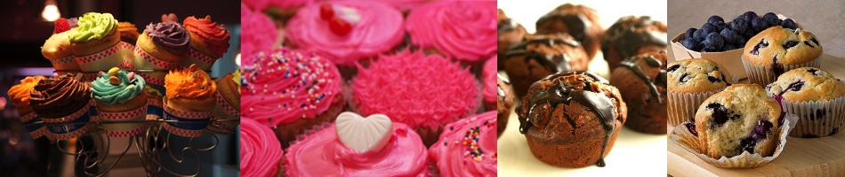

Muffins i alle varianter
Ordet muffins kommer fra franske moufflet og betyr myk i forbindelse med brød.
Etter en definisjon fra wikipedia er muffins et lite koppformet bakverk i porsjonsstørrelser. Det finnes to ulike varianter av disse muffinsene, nemlig en som er basert på gjær og en som lages med bakepulver. Den gjærbaserte muffinsen ligner mer på et rundstykke, mens den med bakepulver er det vi forbinder med muffins. Den med bakepulver blir også mye større enn den med gjær.
Gjær varianten er alikevel eldst og mest brukt, og den kan spores tilbake til det 11. årgundre i Storbritannia. Bakepulvervarianten er nyere, og en amerikansk oppfinnelse.
